Доклад, Ермакова Артёма ученика 8Л, на тему:
Запретный город в Китае
1. Введение
Запретный город (по-китайски «Цзыцзиньчэн» — «Пурпурный запретный город») — это один из самых величественных и известных архитектурных памятников мира, расположенный в центре Пекина. Более 500 лет он служил главной резиденцией китайских императоров династий Мин и Цин, центром политической власти и символом Поднебесной империи. Сегодня это дворец-музей Гугун, внесённый в список Всемирного наследия ЮНЕСКО. Изучение Запретного города позволяет понять не только историю Китая, но и особенности его культуры, искусства и государственного устройства.
2. Историческая справка: строительство и назначение
Строительство Запретного города началось в 1406 году по приказу третьего императора династии Мин — Чжу Ди (Юнлэ). Для его возведения потребовалось около 15 лет и труд более миллиона рабочих, включая лучших мастеров и художников. Основными строительными материалами служили ценные породы дерева (например, наньму), мрамор и особый кирпич. Город получил название «Запретный», потому что доступ на его территорию для простых людей был строго запрещён под страхом смерти. В нём жил император, его семья, многочисленные наложницы, евнухи и придворные. Запретный город был не просто дворцом, а микромоделью вселенной согласно китайским космологическим представлениям: центр мира, где император, Сын Неба, осуществлял связь между небесным и земным.
3. Архитектура и планировка
Архитектурный ансамбль поражает своими масштабами и продуманностью:
Площадь: 720 000 м², около 980 зданий.
Форма: прямоугольник, ориентированный строго по сторонам света.
Защита: окружён глубоким рвом шириной 52 метра и мощной стеной высотой 10 метров.
Планировка: четко разделён на две части:
Внешний двор (Южная часть): Здесь император выполнял государственные функции, проводил торжественные
церемонии (например, в Павильоне Высшей Гармонии — самом большом здании комплекса).
Внутренние покои (Северная часть): Здесь находились личные апартаменты императора, императрицы,
наложниц, а также императорские сады.
Все главные здания выстроены вдоль центральной оси, что подчёркивает идею иерархии и порядка. Цвета
также имели значение: преобладание жёлтого (цвет императора) и красного (цвет счастья и богатства).
4. Жизнь в Запретном городе
Это был сложный, закрытый мир со строгим этикетом и ритуалами. Только император мог ходить по центральной оси. Жизнь сотен обитателей была регламентирована до мелочей. Евнухи играли ключевую роль в управлении внутренними делами дворца и часто обладали большим влиянием. Доступ женщин, кроме императорской семьи и наложниц, был крайне ограничен.
5. Заключение
Запретный город — это не просто старинный дворец, а грандиозный исторический документ в камне и дереве. Он отражает могущество китайской империи, философские и религиозные идеи, вершины архитектурного и художественного мастерства. Сохранение такого памятника — задача всего человечества.
6. Интересные факты
Мифическая защита: На крышах главных дворцов сидят ряды статуэток — бессмертных и мифических животных. Их
количество (от 9 до 3) строго регламентировано и указывает на важность здания. Самое большое количество
— 10 фигурок — есть только на крыше Павильона Высшей Гармонии. Последняя фигурка, «небесный всадник», по
легенде, должен был защитить здание от пожара, но не справился.
· Защита от пожаров — символ власти: Везде в городе стоят огромные чаны для воды (всего их было 308).
Зимой, чтобы вода не замерзала, их подогревали с помощью жаровень, установленных под дном. Это была
целая круглосуточная служба.
· Загадка 9999,5 комнат: Считается, что в Запретном городе 9999,5 комнат. Легенда гласит, что у
Небесного императора во дворце 10 000 комнат. Земной император, будучи его сыном, не мог превзойти отца,
поэтому оставил себе на половину комнаты меньше. На самом деле, по современным подсчётам, помещений
около 8700, но красивая легенда сохраняется.
 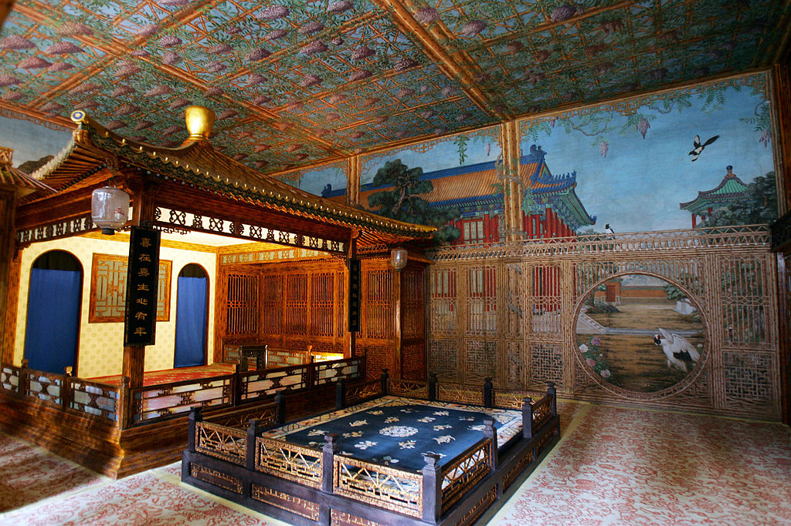
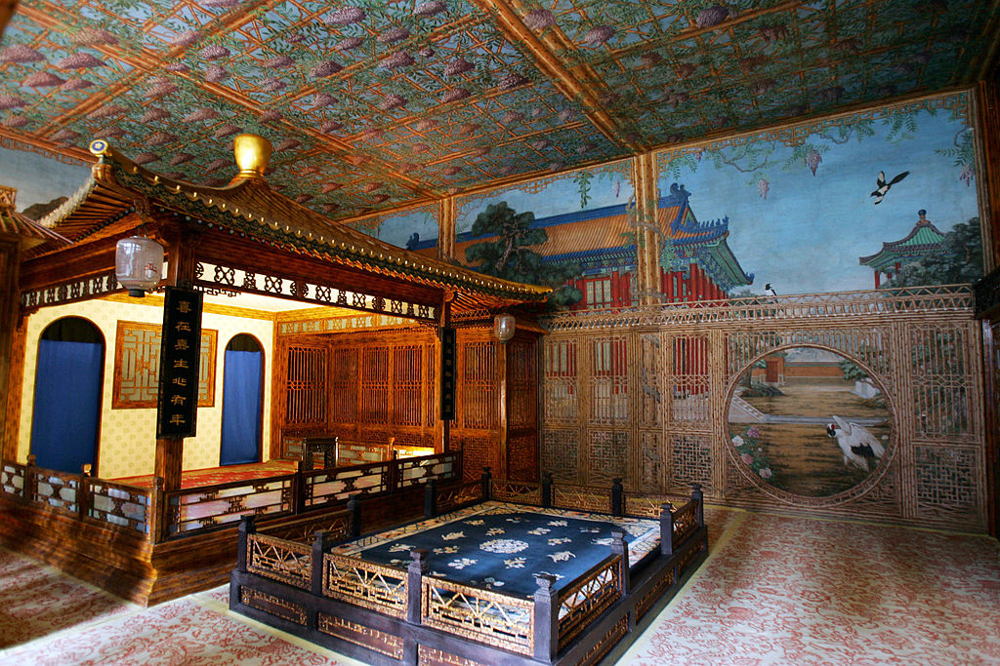
 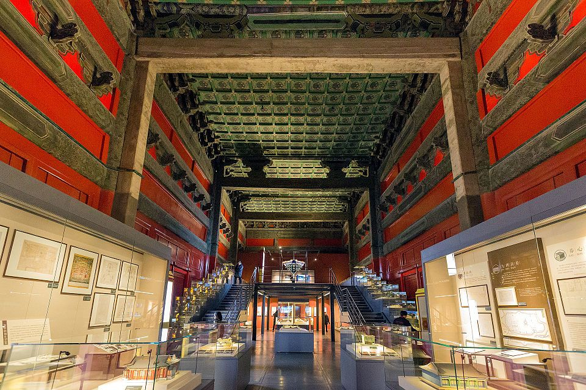
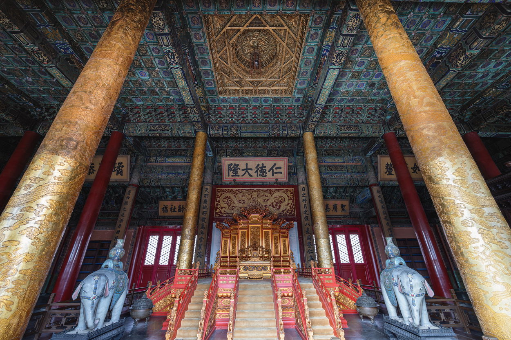
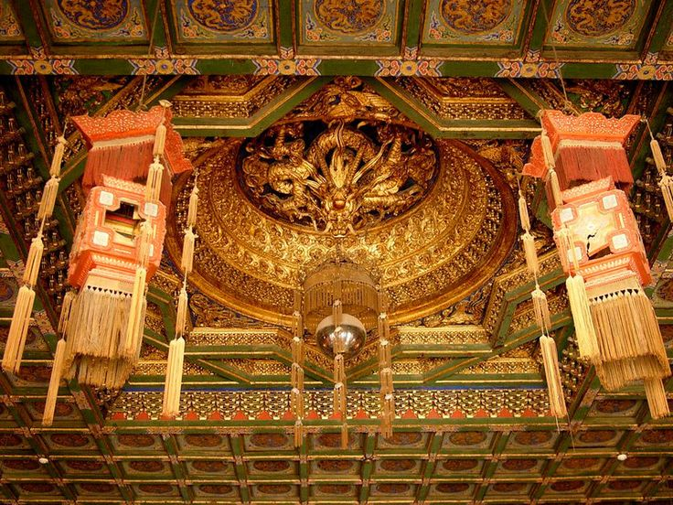
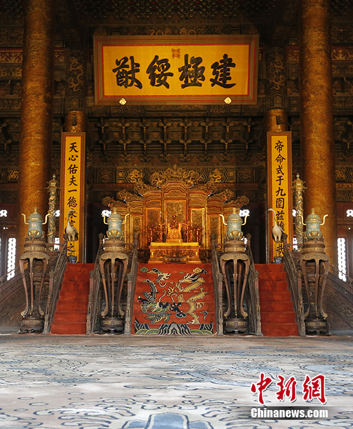
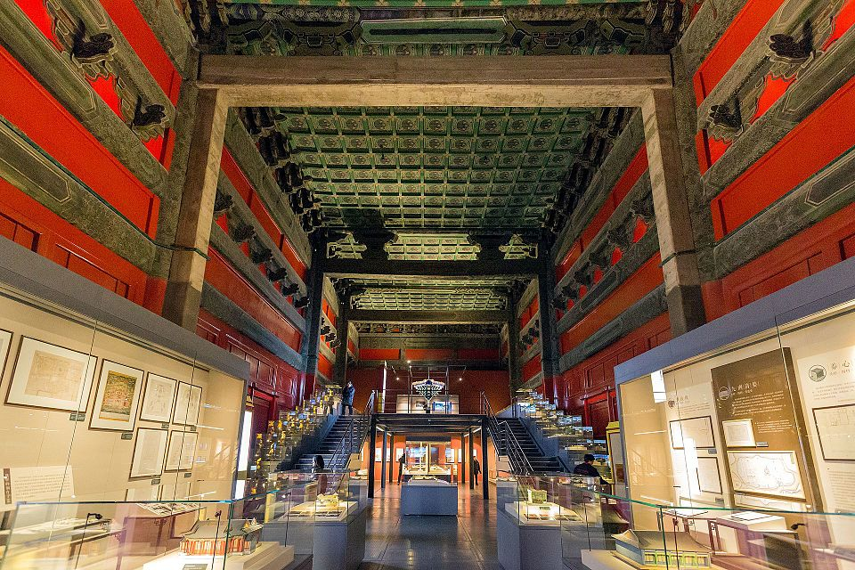
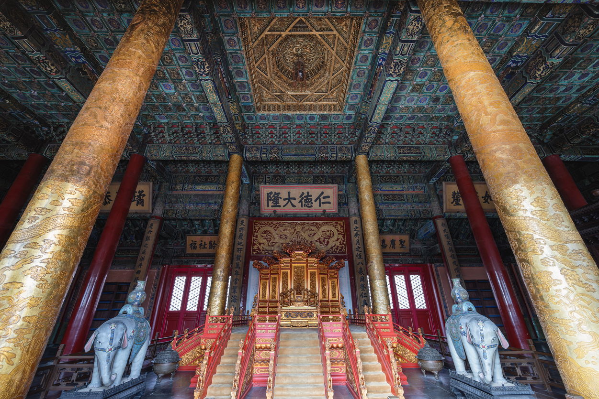
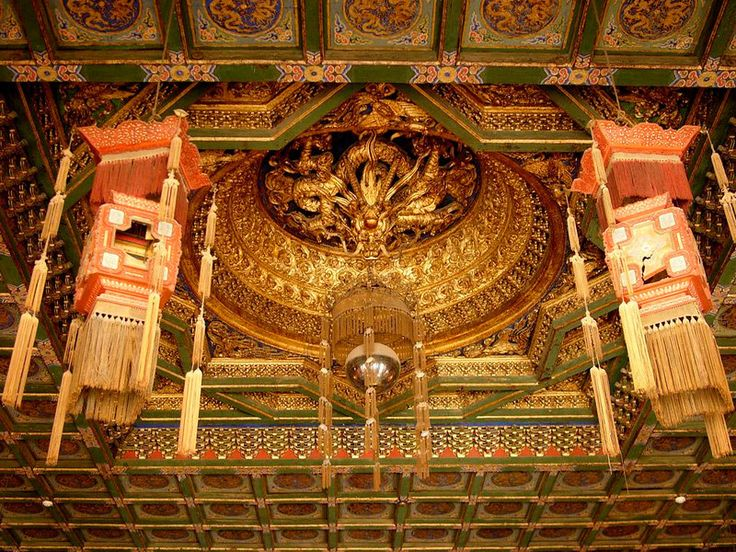
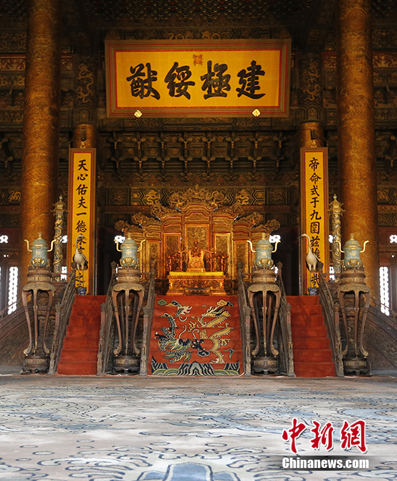

 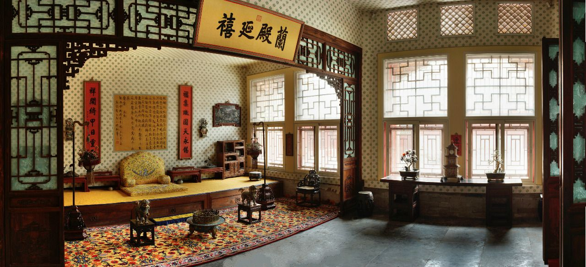
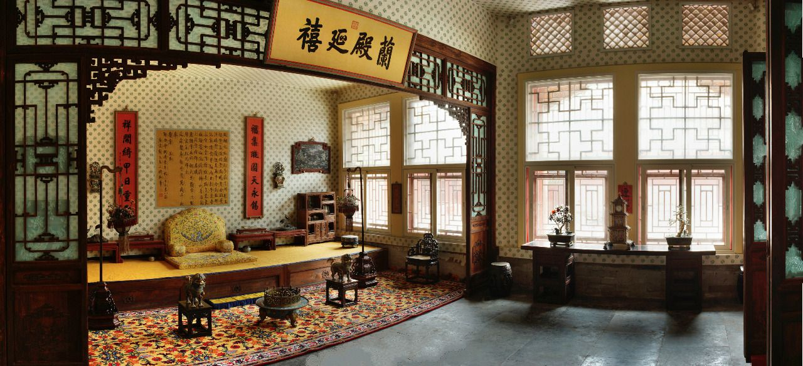
 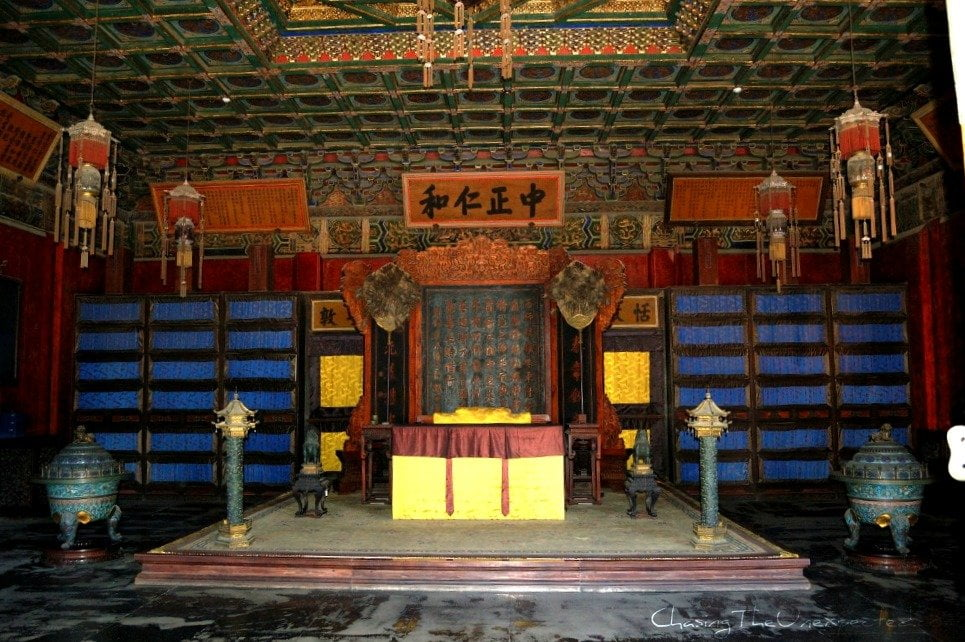
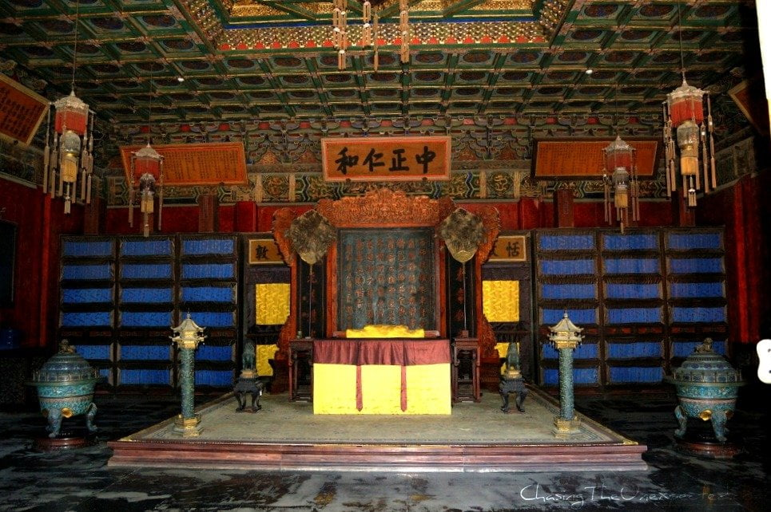